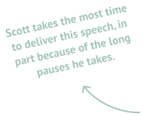

The Performances
Let’s get to know these performances better. Three of them (Essiedu, Cumberbatch, and Scott) are stage performances, two are audio recordings (Hiddleston and Glover), and three are film clips (Hawke, Lester, and Branagh).

What can data teach us about Shakespeare’s most famous speech?
We analyzed audio from 8 performances of Hamlet’s Act III Scene I soliloquy.
From this analysis, we located aspects of each performance that could shed light on the text as a whole: speed and volume.
Let’s get to know these performances better. Three of them (Essiedu, Cumberbatch, and Scott) are stage performances, two are audio recordings (Hiddleston and Glover), and three are film clips (Hawke, Lester, and Branagh).
What can we learn about the soliloquy from the audio of these performances? Let’s demo this analysis using the soliloquy’s incredibly famous first line:

This graph shows how many seconds each actor takes to speak the first line. Note the range of this data: Andrew Scott takes around 11 seconds, but Devon Glover, Ethan Hawke, and Tom Hiddleston all spend around 3.
Actors who spend more time on the opening line emphasize the challenge of solving its central question. Pauses and drawn-out words create a sense of measured, slow contemplation.
Conversely, the actors who spend less time speaking the opening lines instill them with urgency and build momentum for the rest of the speech.
This graph visualizes the volume of each actor’s audio file during the first 10 words. Most of the actors are clustered between RMS levels of -35 and -45, but there are two primary outliers: Branagh and Glover.
Glover is louder than the rest in large part because of the medium of his performance: music, which requires a backing track that ups the volume. Branagh also takes advantage of his medium: cinema. He doesn't need to worry about projecting his voice across a theater like Scott or Essiedu—this allows him to practically whisper the first line, emphasizing its introspective quality.
Also interesting is the dip in Hiddleston’s volume around the word “that”—this indicates that he took a pause before saying the last four words that registered as near silence in our analysis of the audio data.
Now that we've demoed how each metric can inform an analysis of the performances, let's apply that to the speech as a whole beginning with a focus on one key piece of data: timestamps.
From timestamps, we can learn quite a lot. One aspect of the speech they enable us to isolate is pause lengths—where and when does each actor takes their longest pause?
Let’s break this data down. Most of the actors take their longest pause (or one of their longest pauses) around the same lines.

A closer look at these pauses reveals how they reflect the actors' interpretations of certain lines.
![closer look at the longest pauses of lester, branagh, essiedu, scott, cumberbatch, and glover: lester, brangh, and essiedu all take (at least one of) their longest pause[s] before 'to die, to sleep...' The pauses here indicate that these actors are choosing to emphasize the beginning of these famous few lines about death and sleep; scott takes his longest pause before 'to dream...', which stresses Hamlet’s change from musing about the comfort of death’s sleep to recognizing its unpredictable nature; and glover & cumberbatch take theirs after 'must give us pause', which shows that they take that line quite literally here. Their choice to do so underscores the gravity of the next few lines.](pauses2.svg)
Onto the next section...
![closer look at the longest pauses of hawke (before 'who would fardels bear') and lester & branagh (before 'conscience does make cowards of us all'). re: hawke, he takes this pause right after wondering why someone might continue living if they could their “own quietus make.” Pausing here emphasizes the intensity of that question. re: lester & branagh, they both take their second pauses right before what is perhaps the most important line of the speech: where Hamlet realizes that both fear of death and fear of guilt prevent him from taking action—whether on death, the subject of this soliloquy, or on the other challenges he faces in the play.](pauses3.svg)
Another data point we can glean from audio files is volume. The RMS level approximates loudness, and the median RMS level for each actor’s performance is visualized below—the lower the number, the lower the estimated loudness!
This can highlight each actors’ medium, the pauses they take, the lines they emphasize with increased volume, and more.
Which line does each actor say the loudest?
![loudest lines graphic; hawke, hiddleston, and scott each say their loudest lines in the first two lines; essiedu & lester say their loudest lines in the middle (around 'that makes calamity of such long life'); glover & cumberbatch say their loudest line around 'who would fardels bear...', also in the middle of the text; and lastly branagh says his loudest line near the end of the speech, at 'pale cast of thought'. this indicates that actors place emphases and emotional climaxes at very different points in the text!](loudest_lines.svg)
Now, let's look at how the volume data changes over time.
This graph visualizes the actors' volumes over the course of the soliloquy. Toggle the legend to isolate and track each actor!
Hiddleston's graph is the most distinctive—it's marked by constant changes from near silence to volumes that are louder than most other actors. This highlights how he takes frequent, short pauses, trading the spontaneity that other actors embrace for steady stops at punctuation marks.
A good counter example to this is Essiedu. His graph is characterized by less regular peaks and valleys, which indicates his commitment to an emotional take on the speech—rather than a verbatim adherence to the written rhythm and punctuation.
Measuring, analyzing, and visualizing audio data from theatrical performances can highlight numerous insights: how medium affects performance, where common moments of emphasis lie, and different approaches to rhythm and pacing, to name a few.
Focusing on quantitative metrics allowed us to consistently (and qualitatively!) compare lots of different performances. This expedites the process of studying multiple texts or subjects—and shows how we can benefit from bridging creative and technical modes of analysis.

To analyze the audio files of these performances, I used two main softwares: the DeepAffects API speech-to-text function for speed analysis, and FFMPEG to get RMS values for each frame of the audio for the volume analysis. Next, I used R Studio to correct errors in the DeepAffects audio transcription of the soliloquy, and to approximate the average RMS value per second. Given these approximations, timestamps and RMS levels may be slightly off from their actual values. The website was designed with Figma, the graphs were made with D3.js, and the website was coded with HTML, CSS, and JavaScript.
Made by Sophie Bauder. Thanks to everyone at the Learning Lab at the Derek Bok Center for Teaching and Learning at Harvard University for your support and assistance!